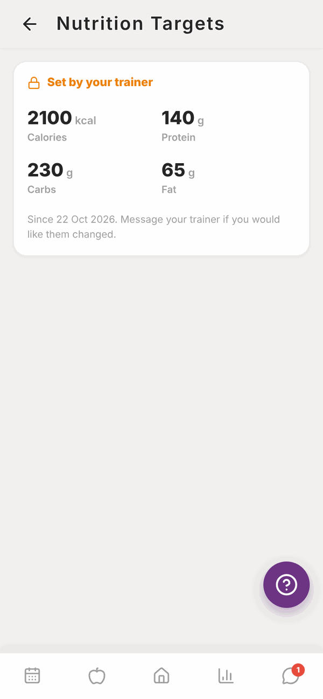
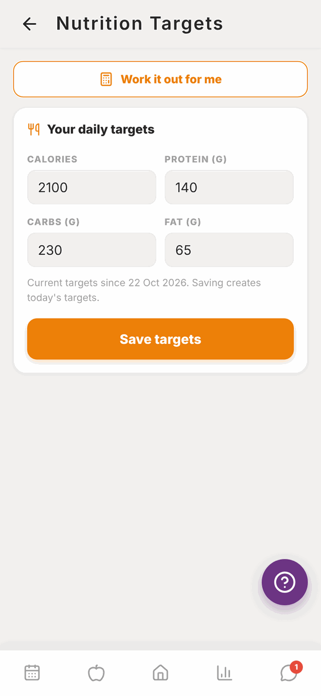

Totality for clients
Nutrition targets
Your daily calories, protein, carbs and fat to aim for, who sets them, and how to work them out with the calculator.
Your nutrition targets are the daily numbers your food log and Home measure you against: Calories (or kJ), Protein, Carbs and Fat.
Usually your trainer sets them. If they haven't yet, you can set your own.
If your trainer set your targets#
You'll see them marked Set by your trainer, with a lock. You can't change them yourself.

To change them, message your trainer. It says so on the screen: Message your trainer if you would like them changed.
Set your own targets#
You can set your own when you don't have any targets yet. Open the screen from:
- The One last optional step screen at the end of First time setup, or
- The Set your nutrition targets card on Home, which shows while you have no targets.

Type your numbers in#
- Under Your daily targets, type your Calories, Protein (g), Carbs (g) and Fat (g).
- Tap Save targets. You'll see "Targets saved".
If your macros don't add up to roughly your calories, a note tells you. Calories must be between 800 and 8,000 (or 3,350 to 33,470 kJ).
Or let Totality work them out#
- Tap Work it out for me to open the calculator.
- Tap Male or Female under SEX (FOR THE FORMULA).
- Check your WEIGHT, HEIGHT and AGE. Totality fills these in from your setup answers.
- If you picked Female, answer PREGNANT OR BREASTFEEDING?
- Tap how many GYM SESSIONS PER WEEK you do, and your DAILY STEPS.
- Pick your GOAL: Fat loss, Maintain or Muscle gain.
- Pick a DIET style: Balanced, High carb, High fat or High protein.
- If your goal isn't Maintain, pick a PACE: Slow, Standard or Fast.
- Tap Calculate. Your daily targets fill in below. Change any number if you like.
- Tap Save targets.

The calculator uses the Mifflin-St Jeor formula, a standard way to estimate how much energy your body uses.
Questions#
How do I change targets I set myself?
The targets screen only opens from Home while you have no targets. After that, ask your trainer to update them. If you also use Totality Nutrition, you can change them there and Totality uses the same targets.
Why can't I edit my targets?
Your trainer set them, so they're locked. Message your trainer.
Can I use kilojoules instead of calories?
Yes. Change Energy to kJ in Settings under Units and region. Your targets then show in kJ.
Do my targets change on training days?
Not in Totality. You get one set of targets for every day.
What happens to my old targets when new ones are saved?
Saving creates new targets from today. Your trainer can still see when each set of targets started. In your food log, every day is measured against your latest targets.